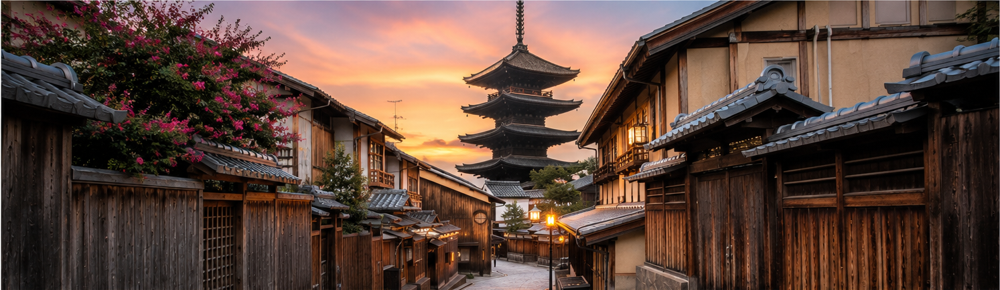
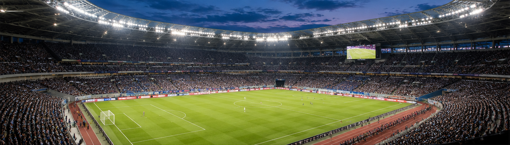

WEB WRITER / PORTFOLIO
読者に寄り添う文章で、
価値を届ける。
丁寧なリサーチと、わかりやすく読みやすい文章を大切にし、読者の「知りたい」に応えるコンテンツを制作します。
Webライター｜貝森こうた
WHAT I DO
記事・台本・構成まで対応
✓ SEO記事・ブログ記事
読者の検索意図を意識した構成と執筆
読者の検索意図を意識した構成と執筆
✓ 観光・スポーツ・運動記事
リサーチをもとに読みやすく整理
リサーチをもとに読みやすく整理
✓ YouTube台本・シナリオ
テーマに合わせた構成・執筆に対応
テーマに合わせた構成・執筆に対応
ABOUT
プロフィール

貝森こうた
はじめまして。Webライターとして活動している貝森こうたです。
SEO記事やブログ記事を中心に、読者にとって「わかりやすく、読みやすい文章」を意識して執筆しています。
観光・旅行やスポーツ・運動などを中心に、丁寧なリサーチを行いながらクライアント様の目的に沿ったコンテンツ制作を心がけています。
納期を守ることはもちろん、報告・連絡・相談を大切にし、最後まで責任を持って対応いたします。
WORKS
執筆実績
現在公開できる執筆実績です。今後、案件実績やYouTube台本・シナリオ実績も追加していきます。

SERVICE
対応可能業務
SEO記事執筆
検索意図を意識し、読者の疑問に答える記事を作成します。
ブログ記事執筆
テーマと読者層に合わせ、読みやすい記事を作成します。
構成作成
必要な情報を整理し、読み進めやすい構成を作成します。
リライト
既存記事を見直し、読みやすく整えます。
YouTube台本
テーマに合わせてリサーチし、理解しやすい台本を作成します。
シナリオ作成
テーマや設定に合わせて、流れを意識したシナリオを作成します。
観光・旅行記事
観光情報を読者目線でわかりやすく紹介します。
スポーツ・運動記事
スポーツや運動に関する情報をリサーチし、読者にわかりやすく整理します。
STRENGTH
仕事で大切にしていること
🔎 丁寧なリサーチ
複数の情報源を確認し、必要な情報を整理して執筆します。
👀 読者目線
読者が知りたいことを意識し、わかりやすく伝えます。
💬 丁寧な連絡
報告・連絡・相談を大切にします。
⏰ 納期管理
スケジュールを確認し、責任を持って対応します。
TOOLS
使用ツール
💬 ChatGPT
📝 Google ドキュメント
📊 Google スプレッドシート
📄 Microsoft Word
📈 Microsoft Excel
🔎 Webリサーチ